Porsche Материал из Википедии — свободной энциклопедии Перейти к навигацииПерейти к поиску У этого термина существуют и другие значения, см. Porsche (значения). Porsche AG Изображение логотипа Porsche AG - panoramio.jpg Тип Aktiengesellschaft Листинг на бирже FWB: PAH3 Основание 1931 Основатели Фердинанд Порше Расположение Германия: Штутгарт, Баден-Вюртемберг Ключевые фигуры Вольфганг Порше, Оливер Блюме (CEO)[1] Отрасль автомобильная промышленность (МСОК: 2910) Продукция Автомобили Собственный капитал ▲ €22,935 млрд. (2021)[2] Оборот ▲ €33,138 млрд. [2] Операционная прибыль ▲ €4.177 млрд. (2021)[2] Чистая прибыль ▲ €4,038 млрд. (2021)[2] Активы ▲ €51,382 млрд. (2021)[2] Число сотрудников 36, 996 (2021)[3] Материнская компания Porsche Automobil Holding Сайт porsche.de (нем.) porsche.co.il (иврит) porsche.com (англ.) Логотип Викисклада Медиафайлы на Викискладе Porsche AG (немецкое произношение [ˈpɔʁʃə][4] — Пóрше[5]; полное наименование Dr. Ing. h. c. F. Porsche Aktiengesellschaft) — немецкий производитель автомобилей и солнцезащитных очков, основанный конструктором Фердинандом Порше в 1931 году[⇨]. Штаб-квартира и основной завод находятся в Штутгарте, Германия[6].
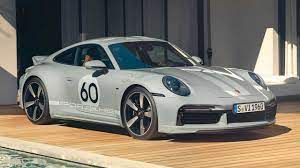 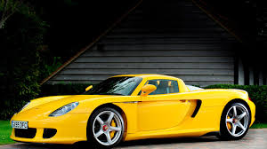Содержание 1 Деятельность 2 Логотип 3 История 3.1 1931—1948: От задумок к серийному производству 3.2 1948—1965: Первые шаги 3.3 1963—1976: взлет 911-го и падение 914-го 3.4 1972—1981: Правление Эрнста Фюрманна 3.5 1981—1988: Вклад нового директора 3.6 1989—1998: Десятилетие перемен 3.7 1996 — наше время: Новые модели и растущий аппетит 4 Производство и продажа 4.1 Продажи 4.1.1 Продажи в Северной Америке 5 Porsche в автогонках 6 Тюнинг автомобилей Porsche 7 Модельный ряд 7.1 Прототипы с оппозитным мотором 7.2 Серийные спорткары с оппозитным мотором 7.3 Болиды и спортпрототипы с оппозитными моторами 7.4 Серийные спорткары с рядным мотором 7.5 Серийные спорткары с V-образным мотором 7.6 Спортпрототипы с V-образным мотором 7.7 Внедорожники/Кроссоверы 7.8 Другие события / проекты в области развития 8 См. также 9 Примечания 10 Ссылки
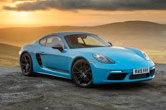Деятельность Мануфактура Porsche, 2005 год Компания выпускает спортивные автомобили класса «люкс», а также внедорожники. Производство Porsche в значительной мере кооперируется с Volkswagen. Апараллельно с участием в автоспорте, ведётся работа над совершенствованием конструкции автомобиля (и его узлов): в разные годы были разработаны синхронизаторы механической КПП, автоматические КПП с возможностью ручного переключения (впоследствии — с кнопками переключения на руле), турбонаддув для серийного автомобиля, турбонаддув с изменяемой геометрией крыльчатки турбины в бензиновом двигателе, электронно-управляемая подвеска и так далее[7]. 50,1 % акций компании принадлежат компании Porsche Automobil Holding SE, с декабря 2009 г. 49,9 % акций принадлежат Volkswagen AG. Porsche — публичная компания, часть её акций обращается на Франкфуртской фондовой бирже и во всемирной электронной системе Xetra. Крупные пакеты акций принадлежат семьям Порше и Пиех. Президент и главный управляющий компании с 1993 года — Венделин Видекинг. Выручка компании за 2009/2010 финансовый год составила 7,79 миллиардов евро, что является для компании абсолютным рекордом за всю историю. За этот же отчётный период продано 81 850 автомобилей, а произведено 89 123. Также компания уже в течение длительного времени ведёт активную деятельность по организации спортивных клубов (клубы Porsche есть во многих странах Европы и Америки) и соревнований среди различных классов своих машин, регулярно проводятся несколько кубковых соревнований. Этому направлению её деятельности посвящена компьютерная игра Need for Speed: Porsche Unleashed. Логотип Эмблема фирмы представляет собой герб, несущий в себе следующую информацию: чёрно-красные полосы и оленьи рога являются элементами герба германской земли Вюртемберг, столицей которой был город Штутгарт, а надпись «PORSCHE» и гарцующий жеребец в центре эмблемы напоминают о том, что родной для марки Штутгарт был основан как конная ферма в 950 году. Автором логотипа является Франц Ксавьер Раймшписсrude (нем. Franz Xaver Reimspieß)[8]. Впервые логотип появился в 1952 году, когда марка вышла на рынок США, для лучшей узнаваемости. До этого на капотах автомобилей была только надпись «PORSCHE».
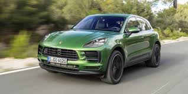Герб Вюртембергаrude (1922—1933) Герб Штутгарта Логотип компании История Ссылки на источники В разделе не хватает ссылок на источники (см. также рекомендации по поиску). Информация должна быть проверяема, иначе она может быть удалена. Вы можете отредактировать статью, добавив ссылки на авторитетные источники в виде сносок. Эта отметка установлена 18 августа 2019 года. 1931—1948: От задумок к серийному производству К моменту выпуска первого автомобиля под своим именем Фердинанд Порше успел накопить немалый опыт. Основанное им 25 апреля 1931 года предприятие Dr. Ing. h.c. F. Porsche GmbH под его началом уже успело поработать над такими проектами, как 6-цилиндровый гоночный Auto Union и Volkswagen Käfer, ставший одним из самых продаваемых автомобилей в истории. В 1939 году был разработан первый автомобиль компании — Porsche 64, который стал прародителем всех будущих Porsche. Для постройки этого экземпляра Фердинанд Порше использовал многие компоненты от Volkswagen Käfer. В течение Второй мировой войны 1939 — 1945 годов компания занималась выпуском военной продукции — штабных автомобилей и амфибий. Фердинанд Порше принимал участие в разработке немецких тяжёлых танков «Тигр P», а также сверхтяжёлого танка «Маус». В декабре 1945 года он был арестован по обвинению в военных преступлениях и помещён в тюрьму, где провёл 20 месяцев. В то же время его сын Фердинанд (краткое имя Ферри) Антон Эрнст решил начать выпуск собственных автомобилей. В Гмюнде Ферри Порше вместе с несколькими знакомыми инженерами собрал прототип 356-го с мотором в базе и алюминиевым открытым кузовом и начал подготовку к его серийному производству. В июне 1948 года этот экземпляр был сертифицирован для дорог общего пользования. Как и 9 лет назад, тут вновь были использованы агрегаты от Volkswagen Käfer, включая 4-цилиндровый мотор воздушного охлаждения, подвеску и коробку передач. У первых серийных машин было принципиальное отличие — двигатель перенесли за заднюю ось, что позволило удешевить производство и освободить пространство для двух дополнительных мест в салоне. Спроектированный кузов обладал очень хорошей аэродинамикой — Cx равнялся 0,29. В 1950 году компания вернулась в Штутгарт.
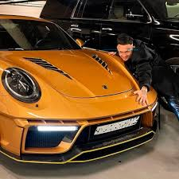 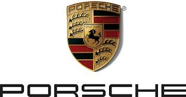1948—1965: Первые шаги Porsche 356 — первый дорожный Porsche С момента возвращения в Штутгарт все кузовные панели изготавливались из стали, от алюминия отказались. Завод начинал с купе и кабриолетов и 1100-кубовых моторов мощностью всего в 40 лошадиных сил(29,42 кВт), но скоро выбор расширился: к 1954 году продавались версии 1100, 1300, 1300A, 1300S, 1500, и 1500S. Конструкция постоянно улучшалась: объём и мощность двигателей продолжили свой рост, появились дисковые тормоза на всех колёсах и синхронизированная КПП, были предложены новые варианты кузовов — хардтопы и родстеры. Агрегаты от Volkswagen постепенно заменялись на собственные. Например, в период выпуска серии 356А (1955—1959) уже можно было заказать двигатель с четырьмя распредвалами, двумя катушками зажигания, и другими оригинальными компонентами. Серию А сменила B (1959—1963), а её — C (1963—1965). Общий объём выпуска всех модификаций составил немногим более 76 тысяч. Параллельно создавались модификации для гонок (550 Spyder, 718 и др.). В 1951 году Фердинанд Порше в возрасте 75 лет скончался от сердечного приступа — его здоровье было подорвано пребыванием в тюрьме. 1963—1976: взлет 911-го и падение 914-го Porsche 911 В конце 1950-х был изготовлен прототип Porsche 695. У руководства компании на этот счёт не было единого мнения: 356-й успел заработать себе хорошую репутацию, поэтому для небольшой семейной фирмы Porsche, переход на новую модель был связан с повышенным риском. Но конструкция образца 1948 года устаревала всё быстрее и резервов для её обновления почти не оставалось. Поэтому в 1963 году на автосалоне во Франкфурте был представлен Porsche 911. Основные моменты в конструкции остались теми же (заднее расположение оппозитного мотора и задний привод), но это уже был современный спортивный автомобиль с классическими линиями кузова в духе Porsche 356. Автором дизайна стал Фердинанд Александр «Бутци» Порше, старший сын Ферри Порше. Первоначально вместо индекса «911» должен был использоваться другой — «901». Но комбинация из 3 цифр с нулём посередине уже была зарезервирована за Peugeot. Автомобиль стал называться 911, но цифры 901 никуда не исчезли: так стали называть 911 модель по внутризаводской номенклатуре (1964—1973). Мотор в первые 2 года выпуска был один — 2-литровый 130-сильный. В 1966 году на конвейер встала модификация Targa (разновидность открытого кузова со стеклянной крышей); после окончания в 1965 году выпуска кабриолетов 356-й серии, они как таковые не появлялись в модельном ряду компании вплоть до 1982 года. В конце 1960-х годов колёсную базу машины увеличили и стали оснащать моторы увеличенного объёма c механическим впрыском. Вершиной эволюции 901-х стали «боевые» модификации Carrera RS 2.7 и Carrera RSR начала 1970-х. Слово Carrera появилось в названии спортивных версий 356 в середине 1950-х — так увековечили память о победе в гонке Каррера Панамерикана 54-го года, после которой марка получила широкую известность в Северной Америке.
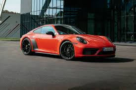Porsche 914 на ралли классических автомобилей в Саксонии, 2010 год В конце 1960-х годов была запущена в серию ещё одна новая модель — Porsche 914. В то время компании Volkswagen понадобилось добавить в модельный ряд какой-нибудь спортивный автомобиль, а Porsche требовался преемник модели 912 (удешевлённый 911-й с мотором от 356-го). Поэтому было решено объединить усилия, и в 1969 году начался выпуск автомобиля под названием VW-Porsche 914, центральномоторной Targa с 4- и 6-цилиндровыми моторами. Детище альянса не оправдало ожиданий — довольно необычная внешность и неудачная маркетинговая политика (из-за «смешанного» названия VW-Porsche) негативно отразились на продажах. Всего за 7 лет выпуска было изготовлено около 120 тысяч таких машин. 1972—1981: Правление Эрнста Фюрманна Porsche 944 — из линейки переднемоторных Porsche 80-х годов В 1972 году юридический статус фирмы сменился с партнёрства с ограниченной ответственностью на открытую (публичную). Dr. Ing. h.c. F. Porsche KG перестала быть семейным предприятием, и теперь называлась Dr. Ing. h.c. F. Porsche AG; семья Порше утратила непосредственный контроль над делами компании, однако доля капитала в ней у Ферри и его сыновей значительно превышала долю семьи Пиех. После реструктуризации Ф. А. Порше с братом Гансом-Петером основал компанию Porsche Design, выпускающую эксклюзивные очки, часы, велосипеды и другие престижные вещи. Внук Ф. Порше, Фердинанд Пиех, перешёл в Audi, а затем в Volkswagen, где впоследствии стал генеральным директором концерна. Первым руководителем компании, который был не из семьи Порше, стал Эрнст Фюрманн, до этого работавший в отделе разработки двигателей. Одно из первых его решений на новой должности — замена 911-й серии спорткаром классической компоновки (передний двигатель — задний привод) — моделью 928 с 8-цилиндровым мотором. При его правлении на конвейер был поставлен ещё один переднемоторный автомобиль — Porsche 924. После дебюта на автосалоне в Париже 1974 года модификации Turbo, развитие линейки 911 (к тому времени в производство пошла модернизированная серия 930 (1973—1989) фактически остановилось до начала 1980-х, пока Фюрманн не был снят с должности. Но его проекты продолжали выпускаться и дальше: последние автомобили Porsche с передним расположением мотора покинули стены завода в 1995 году. На смену 914-му в 1976 году пришли сразу две новые машины — 924 и 912 (теперь с мотором Volkswagen 2.0), который просуществовал всего год. История появления 924-го схожа с 914-м — компания Volkswagen не отказывалась от идеи собственного доступного спорткара и предложила инженерам Porsche разработать соответствующий проект. Им предоставили полную свободу действий, кроме разработки двигателя и КПП — ими должны были стать агрегаты от Audi. Ещё до окончания работ, новое руководство Volkswagen, во главе с Тони Шмюкером, засомневалось в целесообразности выпуска такой машины, так как в 1973 году начался нефтяной кризис. Тогда проект был выкуплен у Volkswagen. По сравнению с 911 моделью это была совсем другая конструкция: современная внешность, классическая компоновка и развесовка, близкая к идеальной, экономичные 4-цилиндровые моторы с водяным охлаждением. Porsche 924 пользовался спросом, и у него был хороший потенциал, что подтверждается постоянным обновлением и пополнением линейки. Уже через 3 года после начала продаж в ней появилась версия с турбонаддувом, а ещё через три года стали выпускать 944-ю — её преемницу. В целом машина осталась той же, а изменения были эволюционными — улучшились многие показатели, а во внешности самым заметным отличием были расширенные крылья, перешедшие по наследству от спецверсии 924 Carrera GT. Эти две линейки производились вместе 6 лет, пока в 1988 году модель не сняли с производства (всего продали почти 150 тысяч). Конструкция 944-й заметно отличалась от 924-й: двигатель представлял собой «половинку» V8 от модели 928, другие крупные узлы тоже заменили на фирменные. За 9 лет выпустили 160 тысяч 944-х, появилось много модификаций — S, S2, Turbo, Cabriolet и т. д. Последним витком эволюции переднемоторных Porsche стала модель 968 (1992—1995). Решение Фюрманна о замене 911-й модели оказалось неудачным: с 1978 по 1995 год было выпущено около 60 тысяч экземпляров 928-х, а 911-х за этот срок — в несколько раз больше. Вялый коммерческий старт этого автомобиля дал понять, что Porsche 911 незаменим.
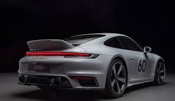В период 1974—1982 годов, когда основной приоритет был отдан развитию моделей 924 и 928, в ряду 911 наблюдалось почти полное затишье. При смене поколений 930-я получила новые энергопоглощающие бамперы и базовый двигатель 2,7 л. В 1976 году им стал 3-литровый. На следующий год линейка была упрощена — вместо модификаций 911, 911S и 911 Carrera ввели единую, под названием 911SC и с пониженной мощностью. В то же время 911 Turbo получил новый мотор — 3,3 л, 300 л. с. Porsche 911 Turbo был одним из самых динамичных автомобилей тех лет, он разгонялся до 100 км/ч за 5,2 с и достигал максимальной скорости в 254 км/ч. 1981—1988: Вклад нового директора Porsche 911 Carrera Club Sport Ферри Порше отправляет Фюрманна в отставку, и на его место приходит Питер Шутц, американский менеджер Porsche. При нём модели 911 вернули негласный статус основного автомобиля фирмы. В 1982 году появляется кабриолет, а через год базовой становится 911 Carrera с 231-сильной силовой установкой. Новинка 1985 года — версия Turbo-look (она же Supersport), являвшаяся обычной Carrera с ходовой и кузовом от модели Turbo, который в свою очередь имел более широкие задние крылья и большой спойлер (иногда его называют «столик для пикника», «поднос» или «китовый хвост»). Сама модель Turbo, годом позже, стала доступна в версии SE, или так называемой Slantnose со скошенной передней частью кузова и убирающимися фарами. В то же время появляется облегчённая 911 Carrera Clubsport, наследница Carrera RS 1970-х и предшественница GT3. Porsche 959 История Porsche 959 началась в 1980 году, когда в мировом чемпионате по ралли была утверждена новая «Группа Б». Ряд компаний были привлечены либеральными требованиями — не было почти никаких ограничений, кроме выпуска 200 омологационных экземпляров. В Porsche тоже решили принять участие. Шутц пришёл к выводу, что нужно показать весь инженерный потенциал компании. Техническая начинка была на высоком уровне: мощность 6-цилиндрового мотора (2,8 л, два турбокомпрессора) равнялась 450 л. с.; на каждое колесо полноприводной трансмиссии приходилось по 4 амортизатора, контролируемых компьютером (также он распределял крутящий момент между осями и мог изменять дорожный просвет); детали кузова изготовлялись из кевлара — лёгкого и прочного пластикового композитного материала. На стадии доводки Porsche 959 дважды участвовал в ралли-марафоне «Париж — Дакар» и в 1986 году занял 2 первых места в абсолютном зачёте. Тем временем оказалось, что «Группы Б» больше нет: трагическая смерть нескольких пилотов и зрителей на ралли побудила федерацию автоспорта FISA закрыть её. В период с 1986—1988 годов произвели больше запланированных 200 штук. Проект 959 оказался убыточен, но заложенные в нём идеи пригодились для развитий гоночных технологий в серийных автомобилях: упрощённой трансмиссией со всеми ведущими оснащались 964-е (1989—1993) и последующие версии, современную систему турбонаддува в своё распоряжение получила линейка Turbo (964/993), схожая передняя часть кузова с фарами и воздуховодами была у 993-х (1993—1998), воздухозаборники версии 996 Turbo (2000—2006) в переднем бампере и задних крыльях также напоминают аналогичные у 959-й. Фирменная адаптивная подвеска PASM (ставится на все нынешние автомобили Porsche) является современным аналогом той сложной системы, что была впервые опробована на Porsche 959. 1989—1998: Десятилетие перемен В эти десять лет ушли со сцены ветераны фирмы — переднемоторные машины и классические 911-е. Вместо них ввели абсолютно новые Boxster и 911 (996) Carrera. Девять лет выпускали 901-ю и шестнадцать — 930-ю, но теперь такого Porsche не могла себе позволить; из-за этого 964 прожил всего 4 года. Это был финальный период для версии Targa в её классическом виде, равно как и для Turbo, и в какой-то степени для Carrera. Последняя теперь могла оснащаться полным приводом и автоматической КП. Кузов был изменён сильнее, чем могло показаться на первый взгляд: разработали новый каркас, серьёзно улучшили аэродинамику (Сх снизился с 0,40 до 0,32) и добавили активный задний спойлер. Отказались от архаичной торсионной подвески. Двигатель расточили до 3,6 л. Задне- и полноприводные версии именовались соответственно Carrera 2 и Carrera 4; спортивная Clubsport переименована обратно в RS. Turbo, первые 3 года, оснащалась проверенным 3,3 л мотором, а в 1993 году тоже получила 3,6-литровый вариант (360 л. с.). Ограниченным тиражом разошлись спецверсии 911 America Roadster и полугоночная 911 Turbo S. Всего выпустили около 62 тысяч 964-х. Суммарный объём её современников (968, 1992—1995 и 928 GTS, 1991—1995) не превысил и 15.
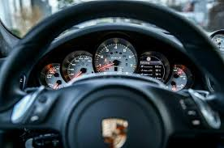911 Turbo, серия 964 Экономический кризис начала 1990-х годов застал марку не в лучшей форме. В эти годы объёмы производства снизились, компания несла убытки. В 1993 году очередным руководитилем Porsche назначен Венделин Видекинг, сменивший Хайнца Браницки (он стал директором после Арно Бона, а тот, в свою очередь, после Шутца). В этом же году в продажу поступило четвёртое поколение её флагмана — под названием 993. Только теперь был сделан значительный шаг в эволюции модели. Встроенные аэродинамичные бампера, новая светотехника и более плавные формы кузова придали Porsche 911 современный облик. Мотор был в очередной раз немного форсирован, но серьёзно доработана была задняя подвеска. Turbo-look теперь обозначалась просто Carrera S/4S. Targa превратилась в обычное купе, только со сдвигающейся панорамной крышей, а Turbo заполучил себе полный привод и серьёзно модернизированный двигатель 3,6 л с двойным турбонаддувом. Его традиционные отличия от обычных 911-х — широкие задние крылья и шины — были все так же заметны, а большой задний спойлер вырос ещё больше, так как повышенная мощность (408 сил) заставила применить более крупные интеркулеры. Версия Turbo S 1997 года, с ещё более мощным двигателем и небольшими изменениями в экстерьере, стала последней новинкой в 34-летней истории главного спорткара фирмы. С момента своего появления 911 Turbo всегда являлся вершиной модельного ряда 911-х. Тем не менее, самым быстрым и дорогим среди 993-х была его дорожно-гоночная модификация GT2 (теперь так именовалась гоночная RSR). Эту машину создали для новообразованного чемпионата BRP Global GT Series, где, помимо всего прочего, разрешалось применение турбонаддува. Поэтому стандартный мотор не подвергся серьёзным доработкам, в отличие от остального: инженеры отказались от «балласта» в лице привода на переднюю ось и внесли необходимые для гонок усовершенствования в кузов. В 1998 году мотор GT2 был улучшен — добавлено двойное зажигание и повышена мощность до 450 л. с. 993 GT2 часто улетали с дороги, за что получили прозвище widowmaker — «оставляющий вдов». 1998-й стал годом потерь и приобретений. Летом из ворот предприятия в Цуффенхаузене выехал последний «воздушный» 911-й. За всю историю таких произвели 410 тысяч; вклад в эту цифру 993-го — 69 тысяч. Тогда же Porsche отмечала свой 50-летний юбилей. И в этот же год, в марте, в возрасте 88 лет скончался Фердинанд Антон Эрнст (Ферри) Порше. В делах компании он не принимал почти никакого участия с тех пор, как в 1989 году поселился на австрийской ферме в Цель-ам-Зее. 1996 — наше время: Новые модели и растущий аппетит Предсерийная модификация Porsche 986 Boxster в музее Porsche Усилия Видекинга стали очевидны под конец 1996 года, когда поступил в продажу центральномоторный родстер Porsche 986 Boxster, ставший носителем нового лица марки. Автор его дизайна — Харм Лагаай (нидерл. Harm Lagaay), возглавлявший работы над экстерьерами всех Porsche 1990-х и первой половины 2000-х годов, при создании облика отталкивался от ранних машин компании — открытых 550 Spyder и 356 Speedster. Название модели образовано из двух слов — boxer (то есть оппозитный мотор) и roadster. В отличие от своих предшественников, чьи открытые версии переделывались из закрытых, 986-й с самого начала проектировался как открытый автомобиль. Единственным вариантом в линейке был родстер с 2,5-литровым 6-цилиндровым оппозитным двигателем, пока к нему в 2000 году не присоединился 986 Boxster S (3,2 л). Новый компактный спорткар по относительно невысокой цене был очень тепло принят рынком и возглавлял итоги годовых продаж Porsche вплоть до 2003 года, пока его не обогнал дебютировавший годом ранее Porsche 955 Cayenne. Производственных мощностей единственного завода не хватало, и часть компонентов для автомобилей собиралась в Финляндии, силами компании Valmet Automotive.
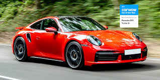Porsche 996 GT3 После Boxster все внимание было приковано к 911-й. В 1997 году на Франкфуртском автосалоне представили новую Carrera, и стало ясно, что у неё много общего с младшим братом, начиная от почти идентичных друг другу передних частей кузова, с фарами в форме капель, и схожими интерьерами, и заканчивая общей конструкцией двигателей. Такие решения позволили сократить расходование средств на разработку и производство, так как в те годы финансовые ресурсы марки были все ещё сильно ограничены. Carrera в 996-м кузове прибавила в мощности и размерах, но при этом осталась первоклассным спортивным автомобилем. Например, британский журнал Evo с начала своего существования (1998) называл 911-ю (и 996, и 997) «Спорткаром года» 6 раз. В 1998 году появились кабриолет и Carrera 4, а в следующем году было сразу две важных новинки: предназначенная для любительских соревнований GT3 (это наименование пришло на смену RS) и новый флагман ряда, 996 Turbo. Моторы двух последних серьёзно отличались от стандартных, так как они базировались на конструкции агрегата спортпрототипа GT1 1998 года. Атмосферный вариант достался GT3, а с двойным наддувом — Turbo. Кроме того, флагман стал обладателем не только самого мощного мотора, но и особенного внешнего вида: специально для него внесли изменения в бампера и светотехнику, и это без учета отличительных особенностей Turbo — спойлера и широкого кузова, у которого на этот раз появились отверстия в задних крыльях. Новому 3,6 л двигателю с жидкостным охлаждением не требовались большие радиаторы, из-за чего отпала необходимость в использовании заднего спойлера Whale-tail. Новая конструкция стала ощутимо компактней. GT3 ничем таким не оснащался, хотя у него тоже были свои особенности, вроде облегчённого кузова, заниженной подвески и отсутствия задних сидений. Porsche 996 GT3 производился с 1999 по 2004, а её улучшенная модификация GT3 RS — с 2003 по 2005. Модель Turbo — с 2000 по 2005; в последние 2 года в продаже находились Turbo Cabriolet и Turbo S (X50 в США) с двигателем мощностью 450 л. с. Новый GT2 (2001) идеологически был скорее немного доработанным Turbo, чем его дорожно-гоночной версией, как в прошлом поколении. Причина этому — несоответствие мировым автоспортивным регламентам, так как турбонаддув был уже под запретом. Конструктивно — тот же Turbo, только с задним приводом, другим передним бампером и крупным задним антикрылом. Сначала оснащался 462-сильным мотором, позднее — 483-сильным. Самый необычный автомобиль в истории марки был представлен в 2002 году. Это «спортивно-утилитарный» вседорожник Cayenne, разработанный совместно с Volkswagen и во многом аналогичный Volkswagen Touareg. Для его выпуска компания построила новый завод в Лейпциге[9]. Производство началось в следующем году, и Cayenne сразу стал самым востребованным продуктом марки, хотя реакция на спорный дизайн и на сам факт существования такого автомобиля была неоднозначной. Половина продаж и основная прибыль приходится всё же на Cayenne, который обновили в 2007 году. Помимо атмосферных версий с V6 и V8, существуют наддувные Turbo и Turbo S. Модельный ряд после модернизации расширен введением 2 новых модификаций: GTS и Turbo S с 550-сильным двигателем. Carrera до 2002 года критиковали за излишнее сходство носовой части с младшим Boxster, так что в ходе модернизации все атмосферные варианты получили светотехнику от Turbo, и различить их теперь стало легче. В очередной раз доработали силовые установки (с 300 до 320 л. с.; с 3,4 до 3,6 л) и изменили бампера, колеса и т. д. В линейке вновь объявилась версия, подобная модели Turbo, на этот раз исключительно полноприводная Carrera 4S. Её новая отличительная черта — красная полоска между фонарями. Porsche Carrera GT На Женевском автосалоне 2000 года одной из самых значительных премьер оказался показ суперкара-концепта Carrera GT, а серийным он стал только через 4 года. Фактически, история этого проекта ещё длиннее, и всё началось с гоночного мотора, разработанного для одной из команд Формулы-1 в 1992 году. Финансовые трудности Porsche заставили приостановить работу в этом направлении. Потом его переделали под регламент «24 часов Ле-Мана» (2000) и снова забросили. В конце концов, Видекинг решил, что этому мотору самое место в будущей Carrera GT. Это V10 объёмом 5,7 л мощностью 612 л. с. Его потенциалу соответствовало всё остальное: 6-ступенчатая КПП с керамическим сцеплением, углекерамические тормоза и некоторые силовые элементы кузова, изготовленные из углеволоконного композита. За те два года, что он производился на фабрике в Лейпциге, собрали 1270 экземпляров, хотя ранее планировалось сделать 1500. Причина — введение новых требований в США по безопасности автомобилей, которые сделали бессмысленным дальнейшее производство или модернизацию этого суперкара. Стараниями Вальтера Рёрля, заводского тест-пилота марки и чемпиона по ралли, Carrera GT стал на некоторое время быстрейшим серийным автомобилем на Нордшляйфе Нюрбургринга — улучшить 7 минут 28 секунд на полсекунды смог только в 2007 году Pagani Zonda F с Марком Бассенгом за рулём. Летом 2004 представили 6-е поколение 911-й с индексом 997. На сей раз обошлись без революционных (для 911) изменений: спорткар в основном сохранил внешний вид предшественника и дизайн интерьера, но небольшие изменения коснулись почти всего кузова — фары (снова стали круглыми) и фонари, бампера, зеркала, колёсные диски и т. д. Внутри — немного изменённая приборная панель с классическими циферблатами. По технической части самая важная новость — возможность установки адаптивной подвески PASM на все версии. Структура модельного ряда осталась той же — Carrera, Targa, GT2, GT3, Turbo. Дорожных GT1 больше не было, так как 911 ушли из этой категории в автоспорте. Версия Turbo получила серьёзно доработанный мотор (480 л. с.; 620 Нм) с изменяемой геометрией крыльчатки турбины (фирменное обозначение VGT). Её особенность — в сочетании тяги небольших турбин на малых оборотах (малая инерционность оных компенсирует недостаток оборотов) и тяги более крупных — на высоких, что также уменьшает эффект турбо ямы. Такая турбина не первый год применяется на дизельных двигателях, но у бензиновых ещё не появлялась из-за трудностей, связанных с более высокими рабочими температурами. Новой стала система полного привода — в основе не вискомуфта, как раньше, а электронно-управляемое многодисковое сцепление (PTM), контролирующее распределение крутящего момента. Опция Sport Chrono Package позволяет нажатием соответствующей кнопки на 10 с увеличивать крутящий момент двигателя до 680 Нм. Прогресс в максимальной скорости небольшой — 310 км/ч против 305 у 996 Turbo, но в разгонной динамике он заметнее — 3,9 с в цикле 0—100 км/ч с МКПП и 3,7 с АКПП, по официальным данным Porsche. Хотя американские журналисты, традиционно устраивающие заезды на ускорение на гоночных прямиках (drag-strip) со специальным покрытием, добивались даже более впечатляющих результатов (например, за 3,2 с сумели достичь 100 км/ч сотрудники издания Motor Trend).
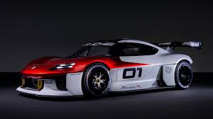GT3 (2006) с атмосферным 415-сильным двигателем почти так же быстр, как и Turbo, но на вершине линейки снова оказался GT2 (2007), дебютант автосалона во Франкфурте. На нём, как обычно, стоит улучшенный 530-сильный мотор от Turbo и используется заднеприводный вариант трансмиссии с системой контроля старта. Преимущество в весе — 100 кг в сравнении с полноприводным собратом. Экстерьер выделяется особенным антикрылом, изменёнными бамперами и колёсами как у GT3. Череда новинок временно прервалась в 2005 году, после премьер нового Boxster и купе на его базе Cayman (официально Porsche считает его самостоятельной машиной). Кроме обновления и пополнения линеек существующих машин, основные усилия компании с тех пор фактически были направлены на одну цель — подготовку к выпуску 4-дверной модели Panamera, которую официально представили в апреле 2009 года на автосалоне в Шанхае[10]. После 980 Carrera GT — самый быстрый серийный Porsche на Северной Петле до 2010 года: его время составляет 7 минут 32 секунды. В 2008 году, после рестайлинга, у 997 серии появилась новая светотехника, бамперы, и трансмиссия PDK с двумя сцеплениями и надбавку мощности (Carrera 350 л. с., Carrera S 385 л. с., GT3 415 л. с.). А в 2009 году уже появились обновлённые GT3 RS (450 л. с.), Turbo (500 л. с.) и гоночный GT3R. В том же 2009 представили серийные Panamera S и Panamera Turbo мощностью 400 и 500 л. с. соответственно. В 2010 году показали стандартную Panamera (300 л. с.), 911 Turbo S и революционный гоночный GT3R Hybrid мощностью 640 л. с. Позднее публике были показаны GT2 RS, являющимся самым быстрым дорожным 911, не считая 996 GT1 Strassenversion, и 918 — нового гибридного концепта мощностью 886 л. с. 31 января 2009 года в Штутгарте состоялось открытие нового здания музея Porsche, основанного в 1976 году. В 2019 году Porsche представила новые модели Cayenne Coupe (340 л. с.) и Cayenne Turbo Coupe (550 л. с.)[11]. В мае 2019 года прокуратура немецкого города Штутгарт оштрафовала компанию на 535 млн евро за нарушения, касающиеся автомобилей с дизельными двигателями V6 и V8 от Audi, которые использовались с 2009 года. В прокуратуре отметили, что некоторые сотрудники при тестировании не проводили необходимые процедуры, в действительности уровень выбросов, производимый автомобилями, был выше нормы.[12] Производство и продажа